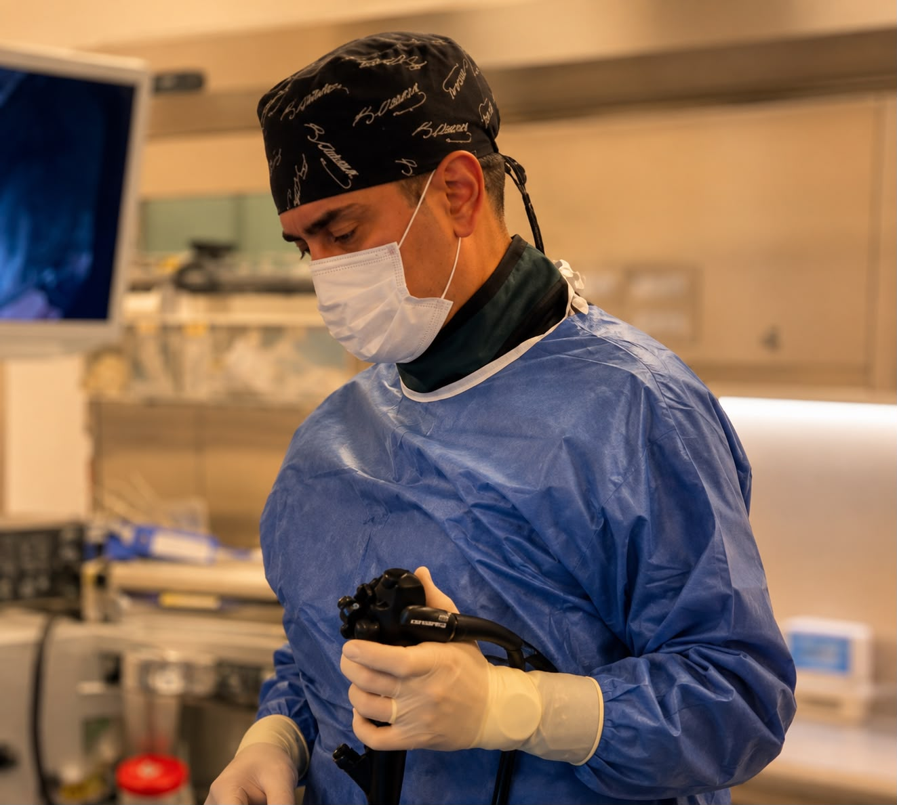

Üst Gastrointestinal Sistem Hastalıkları
- Reflü Hastalığı ve Mide Fıtığı
- Mide Ülserleri
- Gastrit
- Çölyak Hastalığı
- Mide Kanserleri
Sindirim sistemi ve karaciğer hastalıklarının tanı, takip ve tedavisinde güncel tıbbi yaklaşımlar ve hasta odaklı değerlendirme.
Gastroenteroloji ve Hepatoloji
+90 532 318 44 52
Çukurambar mah 1435 Sok 1/3 Atlas Apt Çankaya/Ankara
Hafta İçi: 09:00 – 18:00
Cumartesi: 09:00 – 13:00

Prof. Dr. Gökhan Kabaçam, 2001 yılında Hacettepe Üniversitesi Tıp Fakültesi İngilizce Tıp bölümünden mezun olmuştur. İç Hastalıkları uzmanlık eğitimini ve Gastroenteroloji yan dal uzmanlık eğitimini Ankara Üniversitesi Tıp Fakültesi’nde tamamlamıştır.
Akademik ve klinik kariyeri boyunca özellikle hepatoloji, karaciğer nakli, siroz, ileri evre karaciğer hastalıkları, karaciğer kanseri ve ileri tanısal ve terapötik endoskopi alanlarında çalışmalar yürütmüştür.
2015–2026 yılları arasında Ankara Güven Hastanesi’nde görev yapan Prof. Dr. Kabaçam, bu sürenin son üç yılında Gastroenteroloji Bölüm Başkanı olarak çalışmıştır. Aynı zamanda Karaciğer Nakli Programı’nda Transplant Hepatoloğu olarak görev almış; nakil öncesi değerlendirme, nakil süreci ve nakil sonrası hasta takibinde aktif rol üstlenmiştir.
2021 yılında Yüksek İhtisas Üniversitesi Tıp Fakültesi’nde Profesör unvanını almıştır. Ulusal ve uluslararası mesleki kuruluşlarda aktif görevler üstlenmiş;International Liver Transplantation Society (ILTS) nezdinde ülkemizi temsilen bir çok faaliyet yürütmüş, toplantı ve kurslar düzenlemiştir. ILTS Üyelik ve İletişim Komitesinin önceki başkanıdır.
Bilimsel çalışmaları uluslararası düzeyde takdir gören Prof. Dr. Kabaçam, Avrupa Karaciğer Araştırmaları Derneği (EASL) tarafından dört kez Genç Araştırmacı Ödülü’ne layık görülmüştür. Ulusal ve uluslararası bilimsel dergilerde yayımlanmış 64 bilimsel makalesi bulunmakta olup H-indeksi 19’dur.
Gastroenteroloji, hepatoloji ve ileri endoskopik işlemler kapsamında tanı, takip ve tedavi hizmetleri.
Gastrointestinal sistemin ayrıntılı değerlendirilmesinde kullanılan ileri endoskopik görüntüleme yöntemi.
Özellikle ince bağırsakların değerlendirilmesinde kullanılan kapsül endoskopi uygulamaları.
Tanısal ve terapötik endoskopik ultrasonografi uygulamaları.
Karaciğer sertliği ve yağlanmasının değerlendirilmesinde kullanılan non-invaziv ölçüm yöntemi.
Gastroenteroloji, hepatoloji ve ilgili sağlık konularında bilgilendirici videoları izleyebilirsiniz.
Bu videonun site içerisinde oynatılması video sahibi tarafından sınırlandırılmıştır.
▶ YouTube'da İzleBu videonun site içerisinde oynatılması video sahibi tarafından sınırlandırılmıştır.
▶ YouTube'da İzleÇukurambar Mah. 1435 Sok. Atlas Apt. No: 1/3 Çankaya / Ankara
Hafta İçi : 09:00 – 18:00
Cumartesi: 09:00 – 13:00